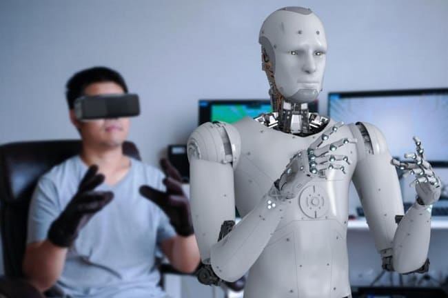

La convergencia entre la inteligencia artificial, las máquinas autónomas y los entornos virtuales está rediseñando las capacidades humanas. El futuro no es solo físico; es inmersivo y automatizado.

Aprendizaje profundo y sensores avanzados que permiten a las máquinas operar de forma independiente en entornos complejos.
Simulación exacta de robots en el mundo virtual para probar su rendimiento y seguridad antes de construirlos físicamente.
Control de maquinaria pesada o de exploración a distancia utilizando visores de realidad virtual y respuesta háptica.
La línea entre lo físico y lo digital se desdibujará. Podremos integrarnos a espacios laborales o educativos donde avatares robóticos ejecuten acciones físicas por nosotros, optimizando tiempos y reduciendo riesgos de desplazamiento.
Surgirá una demanda masiva de nuevos perfiles profesionales, como arquitectos de mundos virtuales y técnicos de sistemas inteligentes. El gran reto ético será garantizar que la tecnología sea inclusiva y accesible.
El futuro no es solo algo que sucede, sino algo que diseñamos. La unión de la robótica y la realidad virtual transformará por completo la forma en que interactuamos con el entorno.
Volver a la Página Principal